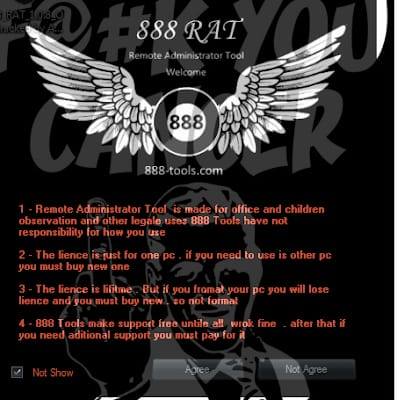

Because a RAT enables administrative control, it makes it possible for the intruder to do just about anything on the targeted computer, including:
Accessing confidential information, such as credit card and social security numbers.
Monitoring user behavior through keyloggers or other spyware.
Activating a system's webcam and recording video.
Taking screenshots.
Distributing viruses and other malware.
Formatting drives.
Deleting, downloading or altering files and file systems.
Detection Of RATs
RATs can be difficult to detect because they usually don't show up in lists of running programs or tasks. The actions they perform can be similar to those of legitimate programs. Furthermore, an intruder will often manage the level of resource use so that a drop in performance doesn't alert the user that something's amiss.
Prevention
To protect your system from RATs, follow the same procedures you use to prevent other malware infections: Keep antivirus software up to date and refrain from downloading programs or opening attachments that aren't from a trusted source. At the administrative level, it's always a good idea to block unused ports, turn off unused services and monitor outgoing traffic.
Books To Learn More
Roger A. Grimes wrote a comprehensive guide on How To Detect and Exterminate RATs.
Ed Hurley explains why RATs warrant attention.
